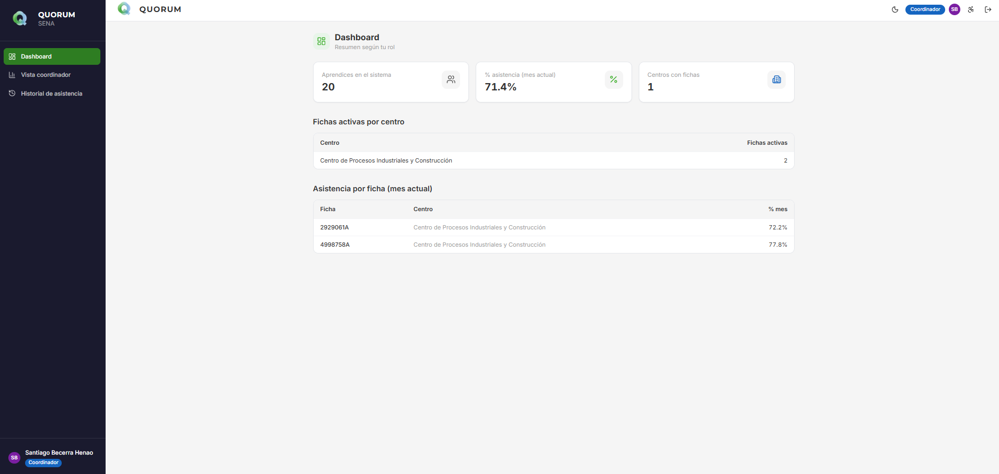
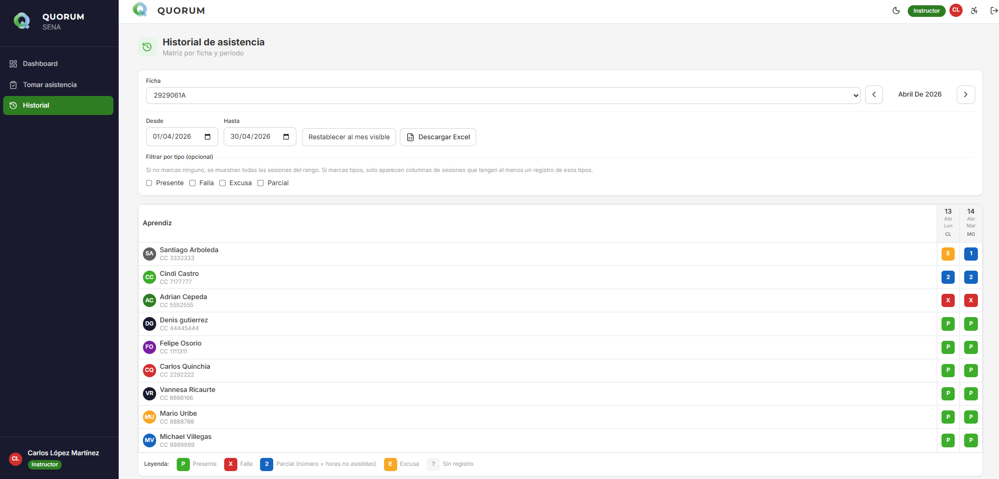

Sistema de Información para la Gestión de Asistencia y Automatización de Formatos Académicos
QUORUM
Andrés Felipe Orozco Piedrahita
Ficha 2929061 · Análisis y Desarrollo de Software (ADSO)
SENA · Centro de Procesos Industriales y Construcción (CPIC) · Mayo 2026
Índice
Contenido de la presentación
01Introducción
02Justificación
03Antecedentes
04Objetivos
05Alcance
06Descripción general
07Arquitectura y stack
08Demo del sistema
09Requisitos
10Casos de prueba
11Impacto
12Cierre
01
Introducción
El control de asistencia en los procesos formativos es un requisito fundamental para garantizar la permanencia y certificación de los aprendices en el SENA.
Actualmente el proceso se realiza de manera manual o dispersa, generando errores en el conteo de horas.
Se produce pérdida de información física y re-procesos tediosos al transcribir datos a formatos institucionales.
QUORUM surge de la necesidad de optimizar este flujo: la asistencia diaria alimenta automáticamente los informes finales.
01
Descripción del problema
Situación actual
Listas de asistencia en papel o archivos Excel individuales por instructor.
Sin fuente de verdad centralizada: cada docente maneja sus propios formatos.
Transcripción manual al cierre de periodo al formato oficial CPIC.
Riesgo de errores, inconsistencias y pérdida de datos.
Consecuencias
Tiempo excesivo dedicado a tareas administrativas en vez de pedagógicas.
Aprendices sin visibilidad de su propio estado de asistencia.
Coordinación sin herramienta de monitoreo en tiempo real.
Formatos finales con errores que retrasan entregas institucionales.
02
Justificación
La digitalización del control de asistencia no es solo una mejora técnica, es una necesidad operativa para la eficiencia del proceso formativo.
Reducción de carga operativa: Lo que el instructor registra en el sistema aparece ya organizado en el formato final.
Transparencia: El aprendiz consulta sus propias fallas acumuladas en tiempo real.
Trazabilidad: Registros centralizados en base de datos con auditoría y respaldo.
Cumplimiento institucional: El reporte Excel se genera respetando la plantilla oficial del CPIC.
Escalabilidad: Puede implementarse en múltiples fichas y centros de formación.
03
Antecedentes y referentes
Additio App
Cuaderno de notas digital multiplataforma. Referente principal en usabilidad (UX) para registro rápido de asistencia y exportación a Excel.
iDoceo
Aplicación líder iOS en gestión de aula. Referencia para lógica de estados de asistencia (retrasos, faltas, excusas) y seguimiento por aprendiz.
Phidias
Software de gestión escolar usado en Colombia. Referencia para visualización de seguimiento intuitiva para estudiantes y familias.
De cada referente se tomaron las mejores prácticas para construir un sistema adaptado al contexto específico del SENA y sus formatos institucionales.
04
Objetivo General
Desarrollar un sistema de información web llamado QUORUM que permita al personal autorizado registrar la asistencia por sesiones de formación, con trazabilidad por ficha y aprendiz, y genere el reporte en Excel alineado al formato institucional de control de inasistencias y deserción del CPIC.
04
Objetivos Específicos
Digitalizar
Toma de asistencia mediante aplicación web responsiva (escritorio y móvil).
Diferenciar acceso
Flujos separados para personal (correo + contraseña + 2FA) y aprendiz (correo + documento).
Consulta aprendiz
Historial personal de asistencia sin acceso a datos de terceros.
Monitoreo coordinador
Vistas de seguimiento por ficha y aprendiz con filtros y estadísticas.
Exportar Excel
Reporte por rango de fechas respetando la plantilla oficial del CPIC.
Administrar
Fichas, usuarios, centros, configuración y días festivos centralizados.
05
Alcance del proyecto
✓ Incluido
✓Autenticación multi-rol con 2FA (TOTP) y reCAPTCHA
✓Asistencia por sesión: presente, falla, excusa y parcial
✓Gestión de fichas, usuarios, centros e importación Excel
✓Vista coordinador con estadísticas y búsqueda
✓Historial personal del aprendiz (solo lectura)
✓Exportación Excel formato CPIC por rango de fechas
✓Dashboard, auditoría, configuración y días festivos
✗ Fuera de alcance
✗Gestión de calificaciones o notas
✗Planes de mejoramiento académico
✗Alertas predictivas complejas
✗Integración en tiempo real con SofiaPlus
06
Descripción general
QUORUM es una aplicación web responsiva que reemplaza las hojas de cálculo individuales por una base de datos centralizada donde interactúan los roles clave de la formación.
Interfaz minimalista adaptada a computadores de escritorio y dispositivos móviles.
Comunicación mediante API REST autenticada con Laravel Sanctum (sesión por cookies).
Cada rol tiene un panel personalizado con las funciones que le corresponden.
Registros inmutables con trazabilidad: lo que se marca en la sesión queda consolidado para el formato final.
06
Roles de usuario
Administrador
Usuarios, fichas, centros de formación, configuración, festivos, auditoría. Máximos privilegios de gestión.
Coordinador
Seguimiento global, estadísticas por ficha, búsqueda de aprendices, descarga de reportes. Solo lectura.
Instructor / Gestor
Toma de asistencia por sesión, historial de fichas asignadas, exportación del Excel oficial.
Aprendiz
Consulta su historial personal de asistencia. Login con correo y documento. Sin permisos de edición.
06
Funcionalidades principales
Autenticación
Login multi-rol, 2FA TOTP, reCAPTCHA, recuperación de contraseña.
Asistencia
Sesiones por ficha. Tipos: Presente, falla, excusa (con evidencia) y parcial.
Reportes Excel
Generación automática del formato CPIC con rango de fechas configurable.
Gestión fichas
CRUD de fichas, asignación de instructores, importación de aprendices desde Excel.
Dashboard
Indicadores por rol: usuarios activos, fichas, aprendices, sesiones del día.
Auditoría
Historial de actividad, trazabilidad de correcciones, supervisión institucional.
07
Arquitectura del sistema
🖥️ Frontend
Next.js 14 SPA TypeScript + Tailwind
⟷
⚙️ Backend API
Laravel 12 REST Sanctum + 2FA TOTP
⟷
🗄️ Base de datos
MySQL 8 Migraciones Eloquent
Comunicación via HTTPS / JSON con cookies de sesión Sanctum.
Políticas de autorización en el servidor (Laravel Policies).
Frontend solo consume /api/*; sin lógica sensible en cliente.
Middleware EnsureTotpSessionOk protege rutas de personal.
Botón Descargar Excel directamente desde esta vista.
08 · Demo
Vista coordinador
localhost:3000/coordinador

Resumen con indicadores: aprendices, % asistencia mes actual, centros.
Fichas activas por centro con detalle de asistencia.
Rol de solo lectura: no puede modificar registros del instructor.
08 · Demo
Mi historial (aprendiz)
localhost:3000/mi-historial

El aprendiz ve únicamente sus propios registros.
Historial completo con fechas, tipos y acumulado de fallas.
Aislamiento total: sin acceso a datos de otros compañeros (RNF-01).
08 · Demo
Generación de reportes Excel
El módulo de reportes genera automáticamente el archivo .xlsx con la plantilla oficial del CPIC, preservando encabezados, logos del SENA y estructura de columnas.
Selección de ficha y rango de fechas personalizado (desde / hasta).
Los datos registrados en las sesiones se inyectan en la plantilla oficial automáticamente.
El archivo está listo para revisión, firma y entrega sin re-proceso manual.
Generado en el backend con PhpSpreadsheet a partir de la plantilla versionada en el repositorio.
09
Requisitos funcionales
ID
Requisito
Descripción
Prioridad
RF-01
Autenticación y seguridad
Login multi-rol, 2FA TOTP, reCAPTCHA, redirección por rol
ALTA
RF-02
Registro de asistencia
Sesiones por ficha: presente, falla, excusa, parcial; corrección controlada
ALTA
RF-03
Consulta aprendiz
Historial personal sin exposición de datos de terceros
ALTA
RF-04
Exportación Excel CPIC
Archivo .xlsx por ficha y rango de fechas con plantilla oficial
ALTA
RF-05
Panel coordinador
Fichas, búsqueda, estadísticas, matriz de seguimiento
MEDIA
RF-06
Gestión admin
CRUD usuarios, fichas, centros, importación Excel aprendices
ALTA
RF-07
Recuperación contraseña
Flujo seguro por correo electrónico
MEDIA
RF-08
Configuración y festivos
Parámetros del sistema y calendario de días festivos
MEDIA
RF-09
Dashboard y auditoría
Indicadores por rol, historial de actividad
MEDIA
09
Requisitos no funcionales
RNF-01 · Privacidad
Aislamiento de datos: un aprendiz no puede acceder a registros de otro. Autorización en servidor con Laravel Policies.
RNF-02 · Usabilidad
Interfaz responsiva. Flujo de toma de asistencia en pocas interacciones para uso diario eficiente.
RNF-03 · Fidelidad Excel
El archivo generado conserva encabezados, logos y columnas conformes a la plantilla CPIC oficial.
RNF-04 · Seguridad
Sanctum, cookies de sesión, CSRF, contraseñas con hash bcrypt, 2FA TOTP para personal.
09
Restricciones por rol
Rol
Permitido
Bloqueado
Aprendiz
Su historial, su perfil
Editar asistencia, ver datos de otros
Instructor
Fichas asignadas, toma de asistencia, descarga Excel
Fichas de otros instructores, gestión global
Coordinador
Consulta y reportes de todas las fichas
Pasar lista o alterar registros
Admin
Configuración total, usuarios, fichas, centros
Registrar asistencia en nombre de instructores
Restricciones de sistema: Sin integración con SofiaPlus; formato Excel inmutable por código; ámbito limitado exclusivamente a asistencia (sin notas ni evaluaciones).
10
Casos de prueba
CP-01 · Consulta aprendiz
Objetivo: Verificar que el aprendiz ve únicamente su historial.
Pasos: Login aprendiz → Mi historial → Verificar registro de falla.
Esperado: Solo aparecen registros del aprendiz autenticado.
CP-02 · Exportación Excel
Objetivo: Validar que el .xlsx refleja las inasistencias del periodo.